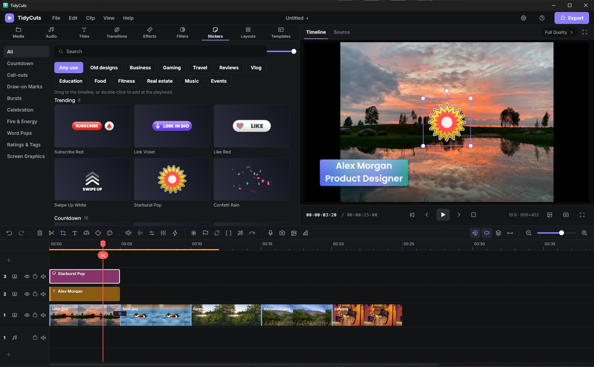
A familiar editor that is easy to pick up: library, player and timeline. Hundreds of titles, effects, filters, transitions and stickers are built in, and it all works offline, with no account.

TidyCuts is a video editor for people who want to make good-looking videos without paying for packs, plans or add-ons. Open it, drop in your clips and start editing. Titles, effects, filters, transitions, stickers and sounds are all built in.
It looks the way you expect a modern editor to look: a library for your files, a player to watch your work and a timeline to put it together. The main track is magnetic, so when you remove a clip the gap closes for you.
TidyCuts is free and open-source. It needs no account, shows no ads, does not track you and works offline. Its AI tools, such as voice clean-up and the thumbnail maker, run on your own computer.
Drop videos, pictures and sounds into the library.
Drag clips onto up to 10 video and 5 audio tracks, then trim and split them.
Add titles, transitions, effects, filters and stickers, and set the colour.
Clean up voices, cut the silences and add music and sound effects.
Save to MP4, MOV, MKV, WebM, GIF or an audio file, ready to share.
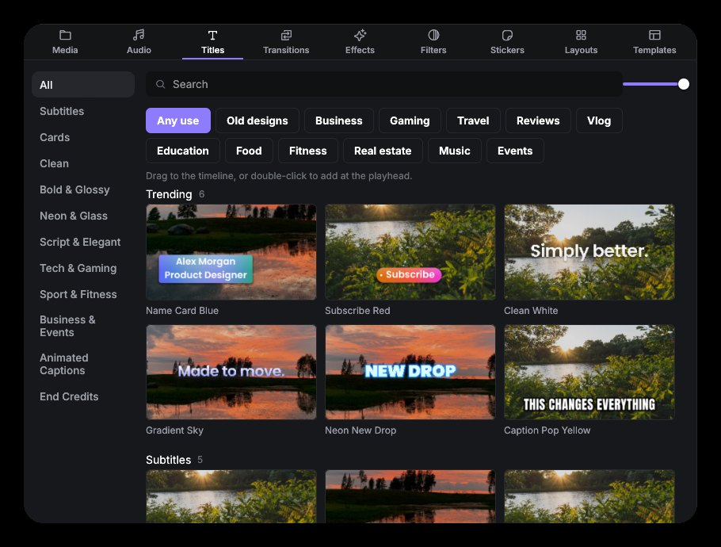
160 titles, including animated captions, 148 effects, 96 filters, 130 transitions, 224 stickers and 70 sounds come with the app. Each one shows a preview, so you can see what it does before you use it.
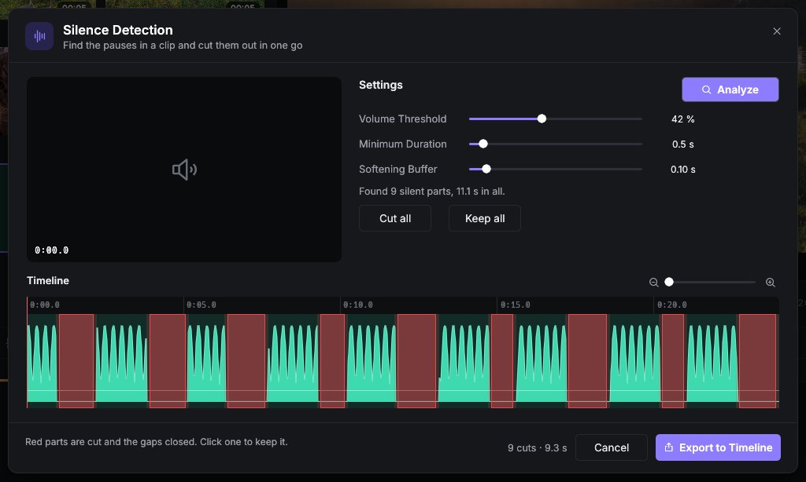
Enhance Speech and Voice Clean-up turn down fans, hiss and room noise, so a recording made at home sounds clear. It all runs on your computer.
Silence detection finds the quiet parts in a recording and cuts them out in one go, which saves a lot of time on talking videos.
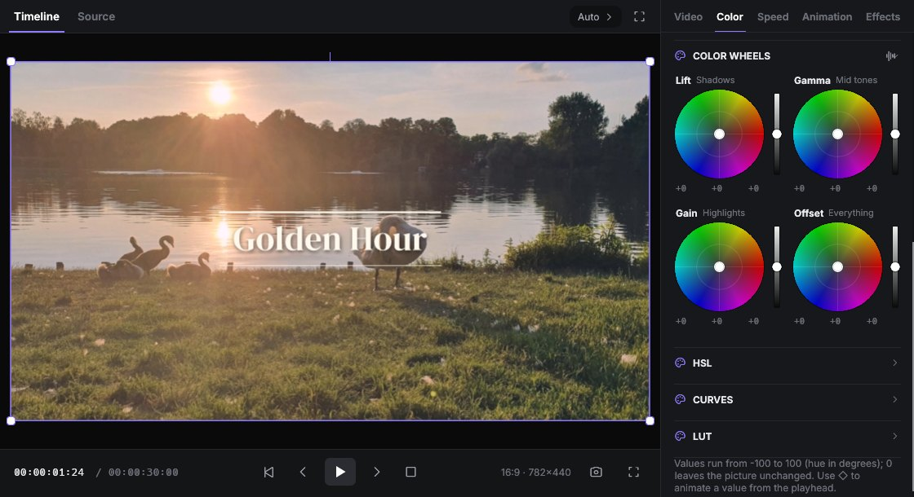
Exposure, temperature, colour wheels, curves and HSL controls, plus ready-made looks and LUTs. Use the built-in ones or load your own.
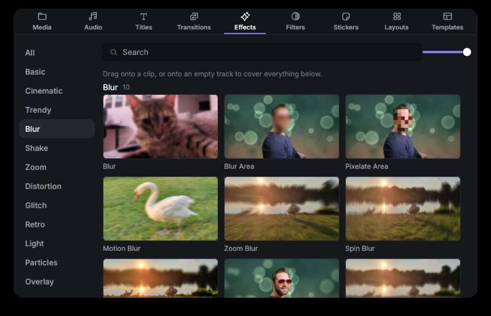
Blur or pixelate a face, a number plate or a screen, and let the blur follow it as it moves through the shot.
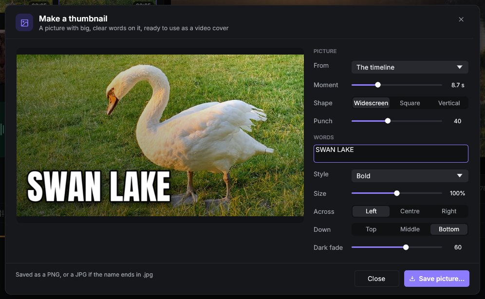
Type an idea and the thumbnail maker draws pictures for your video, up to 4K. It runs on your own computer, so there is no credit system and nothing to sign up for.
Click a picture to see it big.
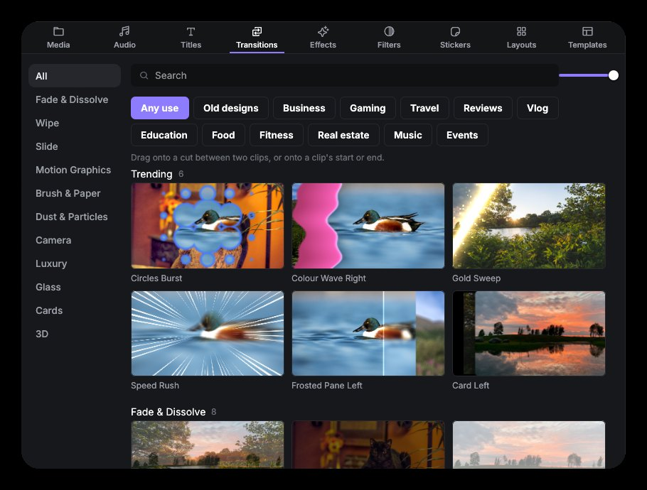
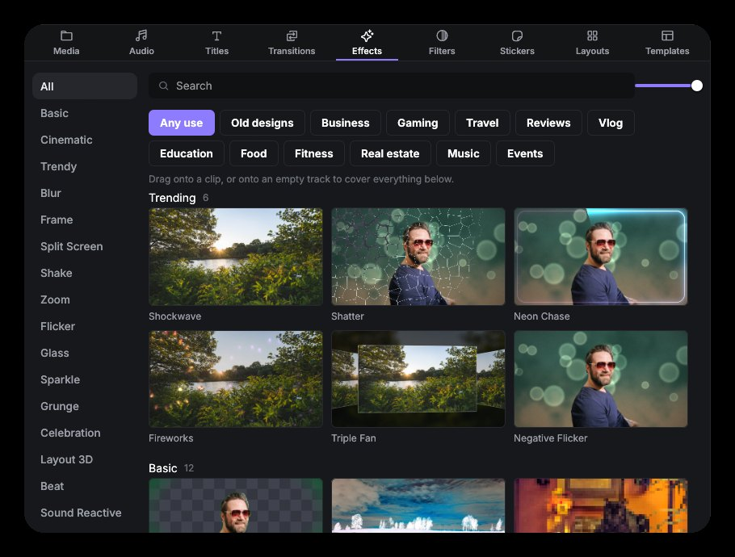
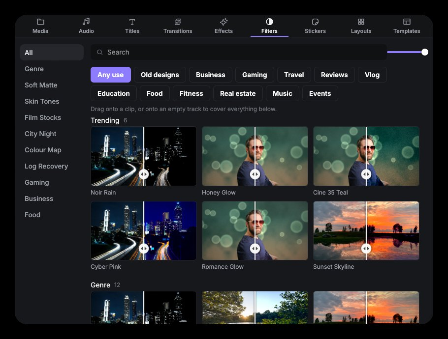
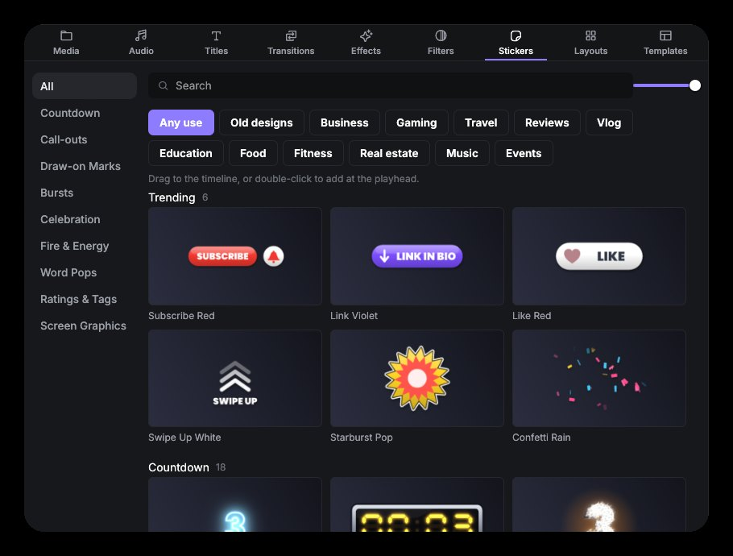
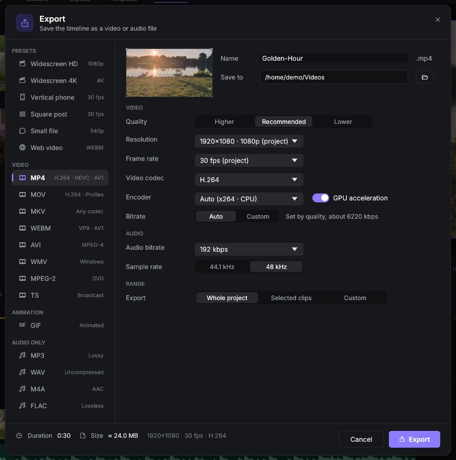
160 titles, 148 effects, 96 filters, 130 transitions, 224 stickers and 70 sounds, free.
Up to 10 video and 5 audio tracks, with a magnetic main track that closes gaps for you.
Enhance Speech and Voice Clean-up turn down fans, hiss and room noise, on your computer.
Remove silences, split at scene changes and mark the beat automatically.
Blur or pixelate an area and let it follow a moving face.
Exposure, temperature, curves, HSL and LUTs, built-in or your own.
Type an idea and draw thumbnail pictures up to 4K, on your own PC.
No account, no ads, no tracking, and it works offline.
TidyCuts is free and open-source. The full source is on GitHub, and there are downloads for Windows, Mac with Apple silicon and Linux.
Yes. TidyCuts is free and open-source, and the full source is on GitHub.
No. There is no account, no ads and no tracking.
Windows 10 and 11, Mac with Apple silicon (M1 or newer) and 64-bit Linux.
MP4, MOV, MKV, WebM, GIF and audio files.
From the Microsoft Store on Windows, or as a free download for Windows, Mac and Linux from GitHub.
Free, with no account and no ads.